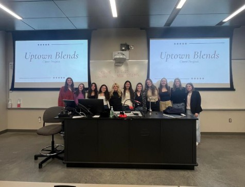

About This Portfolio
This portfolio represents the depth of my work as a digital marketing student and professional. Spanning brand strategy, social media audits, full-funnel media planning, UX research, content creation, and community-driven campaigns. Each project reflects a distinct challenge and a distinct set of skills, from consumer insight research and competitive analysis to hands-on content production and strategic pitching. Many of these projects were developed in real partnership with clients or brands, requiring me to balance creative ambition with business objectives and measurable outcomes. I approach every project with the same process: research, strategize, then execute to ensure that every decision is grounded in data and audience understanding. Across these projects you will see consistent themes: audience segmentation, brand consistency, channel-specific strategy, and a commitment to meaningful engagement. Together, these works demonstrate my ability to operate across both the strategic and executional layers of marketing. Whether I was presenting to a C-suite at NinjaTrader or building a campaign for a stray cat in Oxford, I brought the same level of intention and craft to the work.
The projects below span my time at Miami University and in professional internship roles, reflecting over three years of hands-on marketing development. Some projects were completed individually, while others involved close team collaboration, client presentations, and iterative feedback loops. I have worked with a variety of brands like Dove and NinjaTrader and small businesses like Uptown Blends and The Lab Drawer, giving me experience calibrating strategy to very different audience sizes and business contexts. Each project sharpened a different part of my skill set from social media auditing and paid media planning to graphic design, website building, and UX research methodology. As I approach graduation in May 2026, this portfolio reflects not just what I have done, but the kind of marketer I am becoming. I am always open to discussing any of these projects in more depth. Feel free to reach out through the contact information in the sidebar!
Project Overview
The table below provides a quick-reference summary of all featured projects, including the associated organization, timeframe, and primary skills applied.
| Project | Organization | Timeline | Key Skills |
|---|---|---|---|
| Dove Digital Marketing Brief & Full Funnel Media Strategy | Miami University | Jan – May 2025 | Media Planning, Audience Segmentation, Digital Strategy |
| Uptown Blends Client Challenge | Women in Marketing | Jan – May 2025 | Competitive Analysis, Pitching, Collaboration |
| Dove Social Media Audit | Miami University | Feb – Mar 2025 | Social Audit, Data Analysis, Competitor Benchmarking |
| Social Media Content Strategy: The Lab Drawer | Miami University | Mar 2025 | Content Creation, Branding, Visual Communication |
| Lend a Hand, Save a Paw | Independent | Oct – Dec 2024 | Graphic Design, Social Media Marketing, Campaign Strategy |
| UX Research Portfolio | Miami University | Aug – Dec 2024 | UX Research, Usability Testing, Heuristic Analysis |
| Communication Technology Project | Miami University | Oct – Nov 2023 | User Research, Data Analysis, Interview Skills |
Featured Projects
Dove Digital Marketing Brief & Full Funnel Media Strategy
Over the course of a full semester, I developed a comprehensive digital marketing recommendation for Dove's body care product line as part of a research-driven academic project. The brief included in-depth consumer insights, a thorough competitive analysis, and strategic recommendations tailored to Dove's existing brand positioning and growth objectives. I designed an omnichannel strategy spanning Performance Max, Demand Generation, YouTube Programmatic, and Meta platforms each channel selected based on audience behavior data and funnel stage alignment. Deliverables emphasized brand consistency, channel-specific KPIs, measurable ROI, and strategic bundling offers designed to lift conversion rates. This project gave me hands-on experience translating raw consumer research into an actionable, presentation-ready marketing brief.
- Consumer Insights: Analyzed target demographics, purchase behavior, and brand sentiment
- Competitive Analysis: Benchmarked Dove against key competitors across digital channels
- Channel Strategy: Developed platform-specific recommendations with KPIs and budgeting guidance
- Omnichannel Execution: Mapped touchpoints across Performance Max, Meta, YouTube, and Demand Gen
Uptown Blends Client Challenge — 3rd Place

As part of the Miami University Women in Marketing client challenge, I collaborated with a team to develop a strategic marketing plan for Uptown Blends, a local smoothie business seeking to grow student and community engagement. We worked directly with the client to understand their business goals, audience constraints, and competitive landscape before building a research-backed strategy focused on off-campus marketing and community outreach. Our team conducted thorough competitive analysis and presented final recommendations directly to the client, incorporating their feedback to ensure the strategy was practical and brand-aligned. The plan emphasized increasing brand visibility, building student loyalty, and driving foot traffic through targeted local initiatives. Our team's strategy was awarded third place out of all competing teams, recognizing the creativity and depth of our approach.
Dove Social Media Audit
I conducted a multi-platform social media audit for Dove, evaluating brand performance across Instagram, Facebook, LinkedIn, Twitter, and TikTok — covering both organic content strategy and paid advertising effectiveness. My analysis identified key strengths in Dove's brand voice and visual identity, while surfacing concrete opportunities to improve audience engagement and reach. I delivered data-driven recommendations including a more strategic use of paid media to target core consumer segments, and a consistent posting cadence to improve long-term visibility. This project strengthened my ability to extract actionable insights from platform analytics and communicate findings in a structured, client-ready format.
Social Media Content Strategy: The Lab Drawer
For this project I curated a series of social media post mockups for The Lab Drawer, an educational STEM brand, designed to drive value for both the brand and its audience. The content was crafted to engage educators and students by highlighting the hands-on, interactive nature of STEM learning, while reinforcing The Lab Drawer's brand identity and mission. I balanced creative design with strategic intent each post was built to enhance brand visibility, build community, and communicate impact in a way that felt both educational and authentic. All mockups were produced in Canva and aligned to a defined brand voice, visual style, and content calendar framework.
Lend a Hand, Save a Paw — Independent Campaign
I independently designed and launched a full digital campaign to support Wrench, a stray cat in need of care, while raising broader awareness about the stray cat epidemic in Oxford, Ohio. I built a campaign website using Wix, established and managed Instagram and Facebook accounts, and developed a cohesive visual brand identity across all touchpoints. The campaign amplified a GoFundMe, spotlighted local organizations including The Oxford Catty Shack and Oxford Veterinary, and drove community engagement through storytelling-led content. This project gave me real experience running a campaign from scratch, starting from brand creation and website design to social strategy and community outreach, all built on a foundation of authentic mission-driven messaging.
UX Research Portfolio — Canva & Netflix
I led a UX research initiative analyzing user experiences on both Canva and Netflix to identify usability challenges and opportunities for platform improvement. My team applied a diverse mix of research methodologies including heuristic evaluations, usability testing, user interviews, card sorting, and survey-based quantitative analysis. We synthesized our findings into design recommendations focused on improving navigation, content discovery, and overall user satisfaction all aligned with both user needs and platform business goals. This project deepened my ability to translate qualitative and quantitative research into strategic design direction, a skill that directly informs how I approach audience research in my marketing work. The final deliverable was a full research portfolio documenting methodology, findings, and prioritized recommendations.
Skills Applied Across Projects
The projects in this portfolio collectively represent a broad and interconnected skill set. Below is a summary of the core competencies most frequently demonstrated across this body of work.
- Full-Funnel Strategy — Mapping campaigns from awareness through conversion with channel-specific KPIs
- Social Media Auditing — Evaluating platform performance across organic and paid with benchmarking
- Content Creation & Design — Producing brand-aligned visual content in Canva across platforms
- UX Research — Applying heuristic, interview, usability, and card sorting methods
- Client Pitching — Presenting strategy to real clients and C-suite stakeholders
- Community & Grassroots Marketing — Building campaigns from scratch with authentic brand missions
- Data Analysis & Insights — Extracting actionable recommendations from platform and audience data